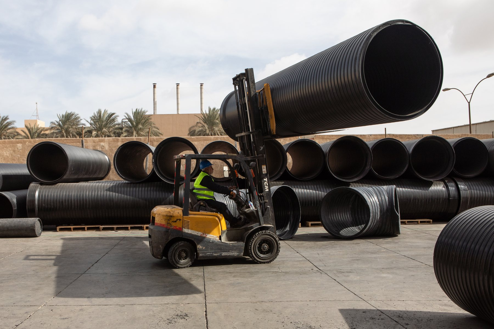
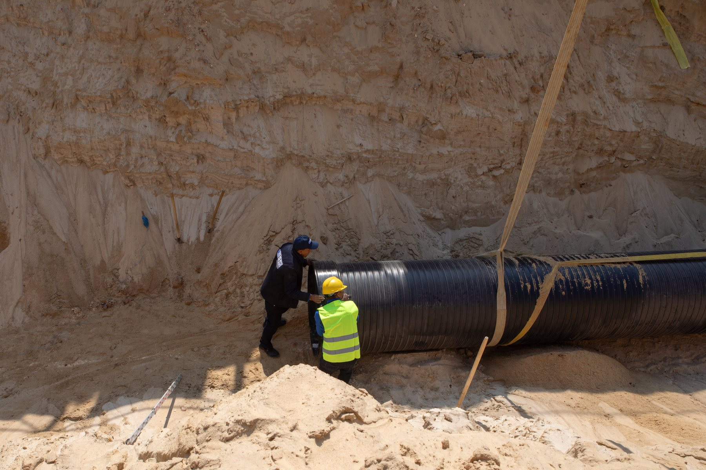
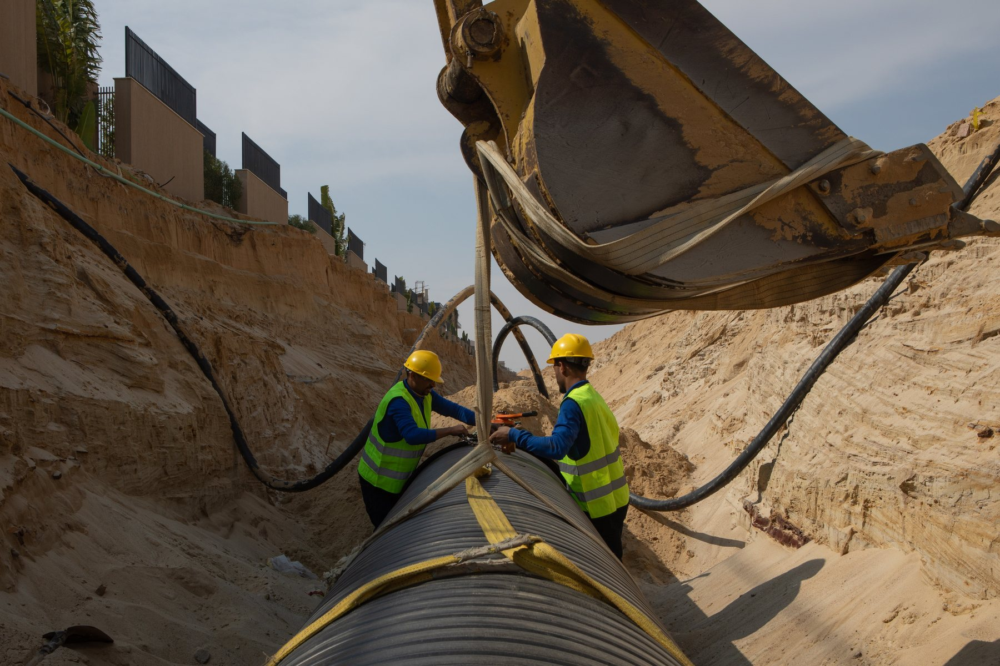

Who it serves
Distributors, contractors, infrastructure suppliers, and project-driven commercial partners.Become a partner
Grow with a pipe systems partner built for projects, distribution, and long-term execution.
Polygrande can frame partnership as more than supply. The story here is about dependable product access, infrastructure-focused commercial support, and the technical confidence needed to serve demanding projects and regional markets.
- Channel growth Support distributors and project-led partners with a stronger industrial product story.
- Technical credibility Pair product supply with installation awareness, standards language, and project responsiveness.
- Execution support Position Polygrande as a partner that helps move pipe systems from yard to trench with confidence.

What it signals
Reliable product availability, practical support, and a team that understands field execution.Why partner
A strong partnership page should connect supply confidence with real project conditions.
This page gives Polygrande a clear B2B partnership story: the ability to support channel growth, help teams respond to infrastructure demand, and bring a more grounded understanding of logistics, installation, and site realities to every commercial relationship.
Partnership model
Work with a team that can support both the commercial side and the practical side of infrastructure supply.
The strongest partnerships in this category are built around more than product price. They are built around availability, technical trust, responsiveness, and the ability to help customers move from order planning to delivery and installation with fewer surprises.
Broader product story
Present HDPE systems as a complete infrastructure solution rather than a simple commodity line.
Support in the field
Use real site and handling imagery to reinforce that Polygrande understands project execution.
Longer-term value
Build relationships that can scale across projects, regions, and future infrastructure opportunities.


01
Open new project channels
Help partners approach infrastructure work with a stronger product narrative, sharper visuals, and clearer commercial positioning.
02
Sell with technical confidence
Back partnership conversations with standards awareness, installation context, and a more practical understanding of system delivery.
03
Build durable relationships
Frame the partnership around repeatable support, project continuity, and shared growth rather than one-off transactions.
Call to action
Start the conversation about becoming a Polygrande partner.
Use this page as the front door for distributor discussions, project collaboration, and long-term infrastructure partnership opportunities.